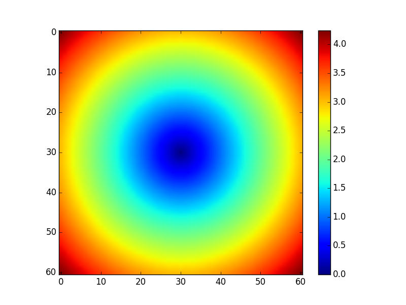

特殊なNumPy配列の生成方法 2015/05/22
ここでは特殊な行列やその他の特殊なndarray配列の生成方法を説明する。
単位行列 np.eye, np.identity
2015/05/25
np.eye または np.identity は単位行列を2次元配列で生成する。この2つの使い方は同じ。要素の型は浮動小数点数になる。
npdata = np.eye(5)
print(npdata)
# 出力結果
# [[ 1. 0. 0. 0. 0.]
# [ 0. 1. 0. 0. 0.]
# [ 0. 0. 1. 0. 0.]
# [ 0. 0. 0. 1. 0.]
# [ 0. 0. 0. 0. 1.]]
numpy.eye | NumPy v1.9 Manual
http://docs.scipy.org/doc/numpy/reference/generated/numpy.eye.html
numpy.identity | NumPy v1.9 Manual
http://docs.scipy.org/doc/numpy/reference/generated/numpy.identity.html
np.meshgrid
2015/05/23
2次元座標空間の中にある24個の点 (0.0, 0.0), (0.5, 0.0), (1.0, 0.0), (1.5. 0.0), (0.0, 0.5), (0.5, 0.5), (1.0, 0.5), (1.5. 0.5), … (0.0, 2.5), (0.5, 2.5), (1.0, 2.5), (1.5. 2.5) は、横(x軸方向)に4個、縦(y軸方向)に6個の格子状に並んでいるが、これをNumPyではx座標、y座標それぞれを抜き出して、
[[ 0. 0.5 1. 1.5]
[ 0. 0.5 1. 1.5]
[ 0. 0.5 1. 1.5]
[ 0. 0.5 1. 1.5]
[ 0. 0.5 1. 1.5]
[ 0. 0.5 1. 1.5]]
と
[[ 0. 0. 0. 0. ]
[ 0.5 0.5 0.5 0.5]
[ 1. 1. 1. 1. ]
[ 1.5 1.5 1.5 1.5]
[ 2. 2. 2. 2. ]
[ 2.5 2.5 2.5 2.5]]
の2つのndarrayで表すことがよくある。
この配列は以下のようにして生成できる。
npdata1a = np.arange(0, 2.0, 0.5)
print(npdata1a)
# 出力結果
# [ 0. 0.5 1. 1.5]
npdata1b = np.arange(0, 3.0, 0.5)
print(npdata1b)
# 出力結果
# [ 0. 0.5 1. 1.5 2. 2.5]
npdata2a, npdata2b = np.meshgrid(npdata1a, npdata1b)
print(npdata2a)
# 出力結果
# [[ 0. 0.5 1. 1.5]
# [ 0. 0.5 1. 1.5]
# [ 0. 0.5 1. 1.5]
# [ 0. 0.5 1. 1.5]
# [ 0. 0.5 1. 1.5]
# [ 0. 0.5 1. 1.5]]
print(npdata2b)
# 出力結果
# [[ 0. 0. 0. 0. ]
# [ 0.5 0.5 0.5 0.5]
# [ 1. 1. 1. 1. ]
# [ 1.5 1.5 1.5 1.5]
# [ 2. 2. 2. 2. ]
# [ 2.5 2.5 2.5 2.5]]
こういう形の配列にするとなにがうれしいのかというと、ndarrayのベクトル計算や ユニバーサル関数を使いやすくなるのである。
以下は、24個の点についてそれぞれ原点からの距離を計算したものである。
print(np.sqrt(npdata2a ** 2 + npdata2b ** 2))
# 出力結果
# [[ 0. 0.5 1. 1.5 ]
# [ 0.5 0.70710678 1.11803399 1.58113883]
# [ 1. 1.11803399 1.41421356 1.80277564]
# [ 1.5 1.58113883 1.80277564 2.12132034]
# [ 2. 2.06155281 2.23606798 2.5 ]
# [ 2.5 2.54950976 2.6925824 2.91547595]]
グラフも書きやすい。
import matplotlib
matplotlib.use('Agg')
import matplotlib.pyplot as plt
x, y = np.meshgrid(np.arange(-3.0, 3.1, 0.1), np.arange(-3.0, 3.1, 0.1))
plt.imshow(np.sqrt(x ** 2 + y ** 2))
plt.colorbar()
plt.savefig('example.png', transparent=True, dpi=80)
IPython Notbookでは上のコードの最初に2行と最後の1行は不要。
